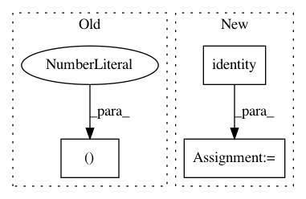

4479113488fb94b72b9aa6bb23b611b57635ff25,src/symbols/fresnet.py,,resnet,#Any#Any#Any#Any#Any#,487
Before Change
no_bias=True, name="conv0", workspace=workspace)
body = mx.sym.BatchNorm(data=body, fix_gamma=False, eps=2e-5, momentum=bn_mom, name="bn0")
body = Act(data=body, act_type=act_type, name="relu0")
body = mx.sym.Pooling(data=body, kernel=(3, 3), stride=(2,2), pad=(1,1), pool_type="max")
elif version_input==2:
data = mx.sym.BatchNorm(data=data, fix_gamma=True, eps=2e-5, momentum=bn_mom, name="bn_data")
body = Conv(data=data, num_filter=filter_list[0], kernel=(3,3), stride=(1,1), pad=(1,1),
After Change
data = mx.sym.Variable(name="data")
if version_input==0:
//data = mx.sym.BatchNorm(data=data, fix_gamma=True, eps=2e-5, momentum=bn_mom, name="bn_data")
data = mx.sym.identity(data=data, name="id")
data = data-127.5
data = data*0.0078125
body = Conv(data=data, num_filter=filter_list[0], kernel=(7, 7), stride=(2,2), pad=(3, 3),
no_bias=True, name="conv0", workspace=workspace)
body = mx.sym.BatchNorm(data=body, fix_gamma=False, eps=2e-5, momentum=bn_mom, name="bn0")
body = Act(data=body, act_type=act_type, name="relu0")
In pattern: SUPERPATTERN
Frequency: 3
Non-data size: 3
Instances
Project Name: deepinsight/insightface
Commit Name: 4479113488fb94b72b9aa6bb23b611b57635ff25
Time: 2018-10-10
Author: guojia@gmail.com
File Name: src/symbols/fresnet.py
Class Name:
Method Name: resnet
Project Name: ysig/GraKeL
Commit Name: bbd6f6b877647cb194dc52f5df5167f15335f6b6
Time: 2017-11-15
Author: y.siglidis@gmail.com
File Name: grakel/kernels.py
Class Name:
Method Name: random_walk_inner
Project Name: deepinsight/insightface
Commit Name: 429d0fd3608e4fac23721b2d3cbeee25e4462072
Time: 2018-10-10
Author: guojia@gmail.com
File Name: src/symbols/fresnet.py
Class Name:
Method Name: resnet